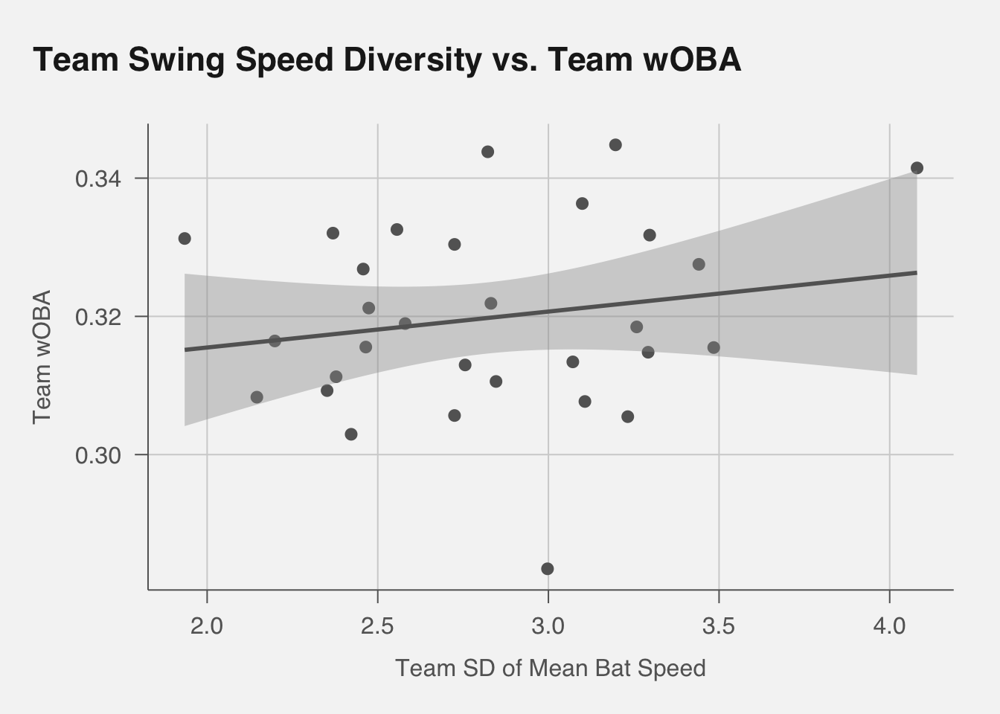
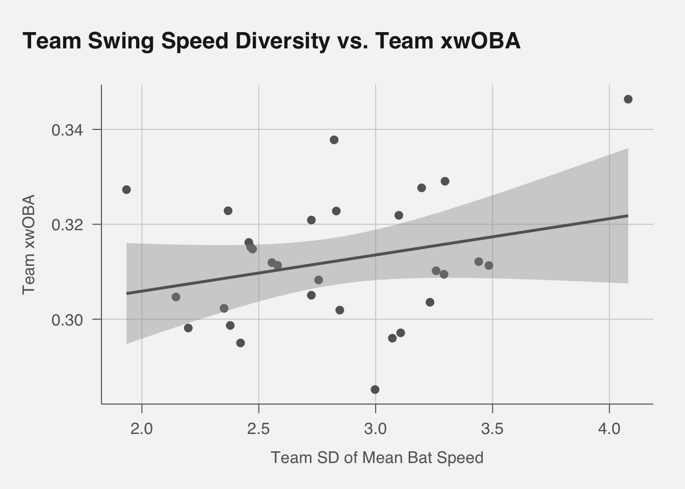
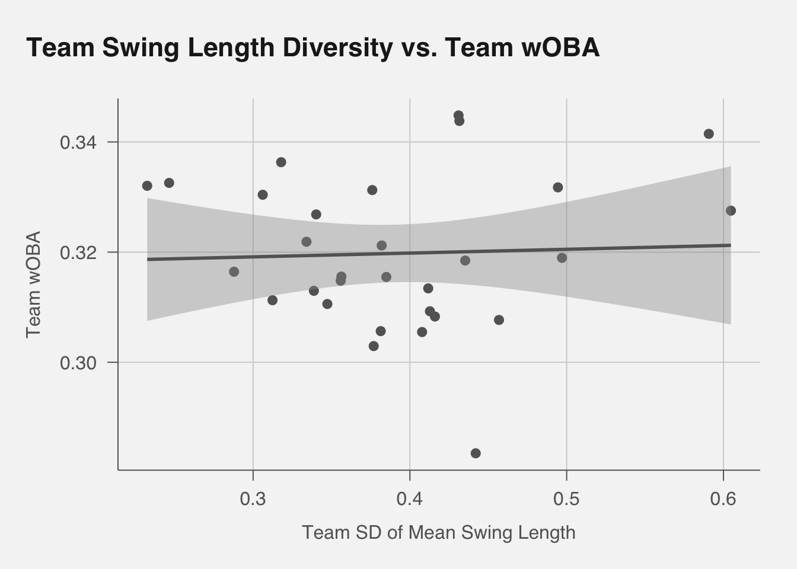
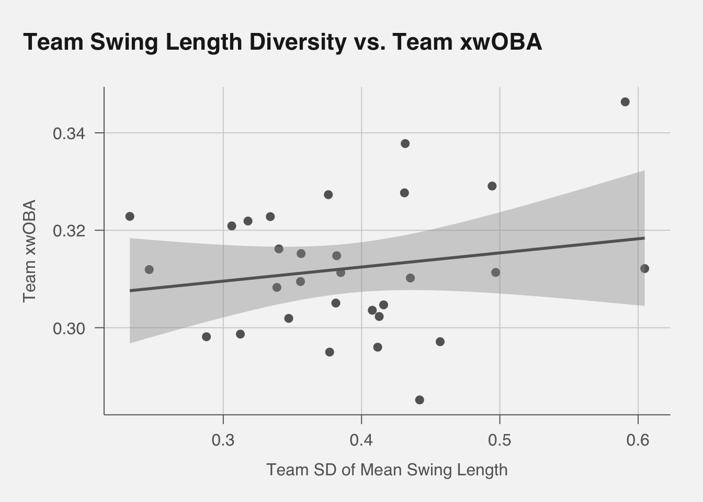
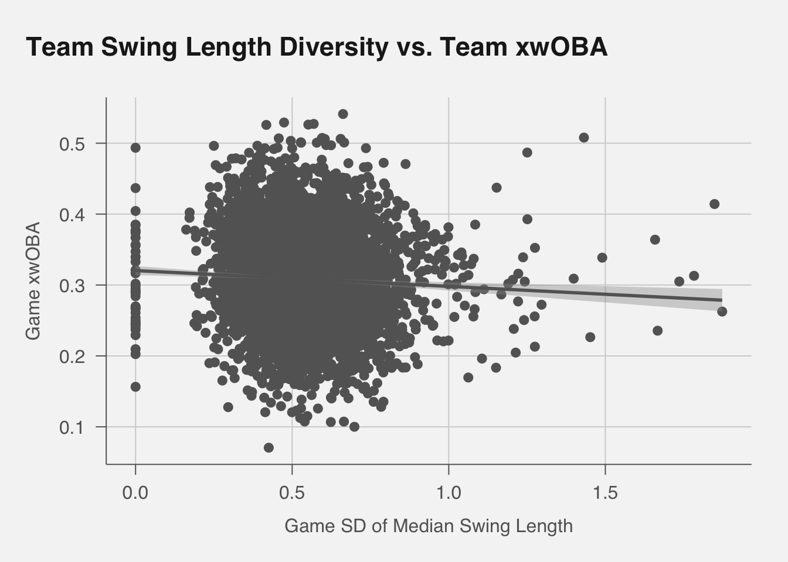
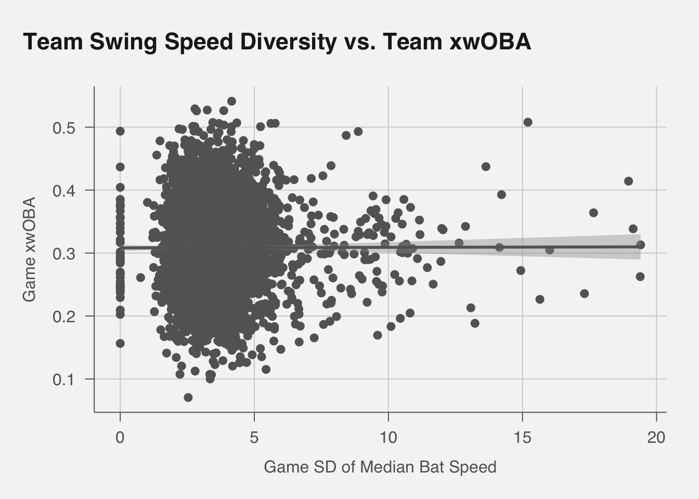
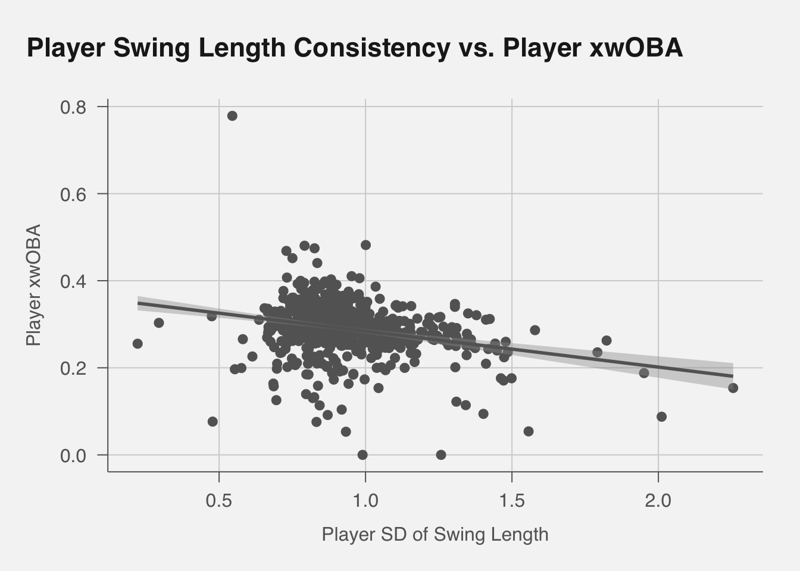
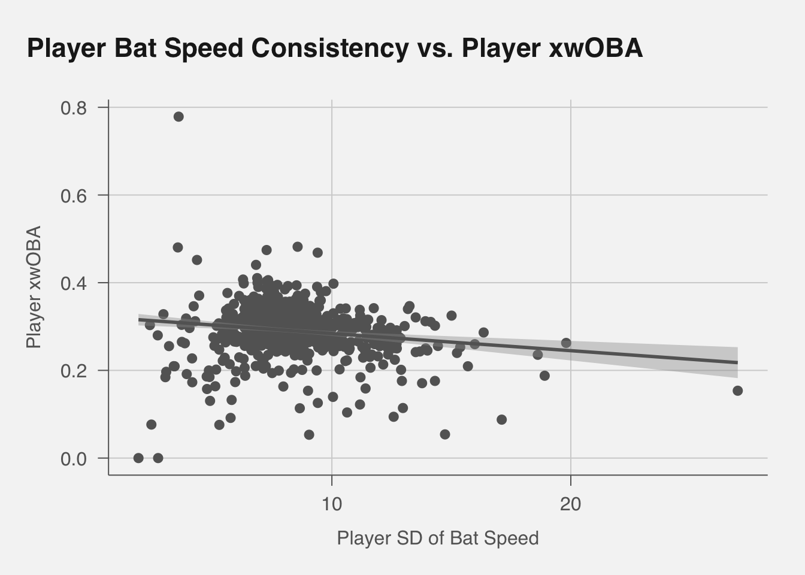

Show Code
# url included if we wanted to use read_csv with this data from an AWS S3 bucket
# statcast_url = "https://lances-lineups-data.s3.us-east-2.amazonaws.com/statcast_data.csv"
statcast_data <- read.csv("data/statcast_data.csv")Lance Brady
February 26, 2025
Recent advances in Statcast technology have allowed for the direct measurement of bat speed and swing length on pitches where the batter swings. These new metrics open the door to exploring questions that were previously left to inference, scouting reports, or assumptions about mechanics. Specifically, we have become interested in the idea of swing consistency: How much do a batter’s bat speed and swing length deviate from pitch to pitch or from game to game? How do differing swing profiles on a roster correlate with run generation during a game?
This article addresses three connected but distinct angles on these new metrics:
Individual-Level Swing Diversity: Do stable or volatile swing metrics for a single batter over a season correlate with that batter’s offensive success, measured through wOBA or xwOBA?
Game-Level Team Swing Diversity: Does a club whose hitters share similar or very different swing metrics on a given day see any advantage in that day’s run production?
Our analysis aims not to prove a direct cause-and-effect relationship but rather to uncover whether correlations exist that might guide roster construction, daily lineup decisions, or player development. Given that these bat speed and swing length metrics are new, we expect some initial findings to be exploratory, setting the stage for deeper or more controlled studies in the future.
Fundamental Questions Of Our Study
Individual: Is consistency associated with higher personal performance once I factor out average skill?
Game: On a day-to-day basis, does having a consistent or varied approach correlate with daily offensive output?
First, we loaded in our libraries and read the data, which contains almost every pitch from the 2024 season (excluding when poor data was retrieved).
We will want to create a weighted standard deviation-like metric for a team’s between-player swing style, either swing length or swing speed, variation. This will essentially be a weighted standard deviation of a team’s player’s average swing style for those two variables. I decide to give weight to each player by Plate Appearances, not by number of swings. This is because for a particular team, we do not want to overweight the free-swinging players just because they have more swing data. We want to consider player-team combinations, so that a player’s plate appearances for a certain team are treated separately from their plate appearances for another team, if they played for multiple teams in this season for some reason. This will account for the fact that a player might change swing characteristics upon getting to a new team.
First, let’s create a unique ID for each Plate Appearance in pitches.
For each at-bat, decide if the batter is on the home_team (if inning_topbot == “Bot”) or the away_team (if inning_topbot == “Top”). This assignment handles trades automatically, because the data for each game has the correct home/away teams for that date.
At this point, a single batter can have multiple rows with different batter_team values if they switched teams mid-season. Each row corresponds to a single plate appearance.
Now we define each combination (batter, batter_team) separately, so we only include that player’s PAs while on that team.
Checking players who switched teams midway through, like Justin Turner, who had 349 PAs for Toronto along with 190 PAs for Seattle, we can see that the batter_team_pa_count is about correct. We get 332 and 189 PAs in our data respectively, likely due to some missing data.
To get mean swing length for a player, we need to use only the rows from the times the batter was on that team. That means merging in batter_team_map so we can group by (batter, batter_team).
batter_team_swing_stats <- pitches %>%
# Keep rows where swing_length and bat_speed are not NA
filter(!is.na(swing_length), !is.na(bat_speed)) %>%
group_by(batter, batter_team) %>%
summarise(
mean_swing_length = mean(swing_length, na.rm=TRUE),
mean_bat_speed = mean(bat_speed, na.rm=TRUE), # Will need in Question IB
sd_swing_length = sd(swing_length, na.rm=TRUE), # Will need later
sd_bat_speed = sd(bat_speed, na.rm=TRUE), # Will need later
.groups="drop"
)For each batter-team combination, we now have the mean swing length and bat speed, along with standard deviation. We can now calculate the weighted standard deviation of swing length for each team.
We want to first add the total PA for each batter-team combination to the batter_team_swing_stats data frame. This will allow us to weight the standard deviation of swing length by the number of plate appearances for each player.
We’ll define a small helper to compute weighted SD:
team_diversity <- batter_team_swing_stats %>%
group_by(batter_team) %>%
summarise(
# Weighted SD of each player's mean bat_speed
team_sd_mean_bat_speed = weighted_sd(mean_bat_speed, total_PA_for_that_team),
# Weighted SD of each player's mean swing_length
team_sd_mean_swing_length = weighted_sd(mean_swing_length, total_PA_for_that_team),
.groups="drop"
)We now have the weighted standard deviation of swing length for each team. We can now check if this variation in swing length helps or hurts scoring. We will use wOBA and xWOBA as proxies for scoring. We will do these calculations manually as our dataset does not include all 2024 Plate Appearances so we will only focus on our subset of the data. We will use the woba_value and woba_denom column in pitches to calculate wOBA for each plate appearance. We will then calculate the average wOBA for each team.
Typically, wOBA is credited once per completed PA (plate appearance). In many Statcast datasets, woba_value and woba_denom are only non-zero on the final pitch of the PA. However, to ensure we only count each PA once, we can explicitly slice the final pitch of each (game_pk, at_bat_number).
Now final_pitches has exactly 1 row per completed PA. This is our formula for wOBA:
Upon inspecting the data, we can see that there are some rows for which woba_value or woba_denom are NA, so we will filter those out.
team_woba <- final_pitches_clean %>%
group_by(batter_team) %>%
summarise(
total_woba_value = sum(woba_value, na.rm=TRUE),
total_woba_denom = sum(woba_denom, na.rm=TRUE),
team_wOBA = ifelse(total_woba_denom == 0, NA,
total_woba_value / total_woba_denom),
.groups="drop"
) %>%
select(-total_woba_value, -total_woba_denom) %>%
arrange(desc(team_wOBA))This list seems to make sense and is in line with overall 2024 data. Typically, woba_denom is 1 for outcomes like walks, hit-by-pitch, or batted-ball events. For sacrifice flies or other rare events, it can vary slightly. The sum of woba_denom for a team is essentially the sum of PAs used in the wOBA formula (excluding some events like catcher interference or maybe intentionals, depending on how MLBAM codes them). So, its sum is essentially “the count of wOBA-relevant plate appearances”.
We can also calculate xwOBA for each team. xwOBA is a more advanced metric that uses exit velocity and launch angle to estimate the expected wOBA for each batted ball. We will use the estimated_woba_using_speedangle column in pitches to calculate xwOBA for each batted-ball plate appearance, then account for walks, hit-by-pitches, etc. We will then calculate the average xwOBA for each team.
team_xwoba <- final_pitches_xwoba %>%
group_by(batter_team) %>%
summarise(
total_xwoba_value = sum(xWOBA_value, na.rm=TRUE),
total_xwoba_denom = sum(xWOBA_denom, na.rm=TRUE),
team_xwOBA = ifelse(total_xwoba_denom == 0, NA,
total_xwoba_value / total_xwoba_denom),
.groups="drop"
) %>%
select(-total_xwoba_value, -total_xwoba_denom) %>%
arrange(desc(team_xwOBA))This also seems to make sense and is in line with overall 2024 data.
`geom_smooth()` using formula = 'y ~ x'
Let’s create a linear model to see if there is a significant relationship between team swing speed diversity and team wOBA.
Call:
lm(formula = team_wOBA ~ team_sd_mean_bat_speed, data = analysis_df)
Residuals:
Min 1Q Median 3Q Max
-0.037205 -0.007888 -0.001217 0.010741 0.024043
Coefficients:
Estimate Std. Error t value Pr(>|t|)
(Intercept) 0.305091 0.015363 19.859 <2e-16 ***
team_sd_mean_bat_speed 0.005201 0.005375 0.968 0.341
---
Signif. codes: 0 '***' 0.001 '**' 0.01 '*' 0.05 '.' 0.1 ' ' 1
Residual standard error: 0.01376 on 28 degrees of freedom
Multiple R-squared: 0.03236, Adjusted R-squared: -0.002197
F-statistic: 0.9364 on 1 and 28 DF, p-value: 0.3415In this linear model, we get a negative Adjusted R-squared, signalling that there’s almost no linear relationship—in other words, once the penalty for adding a predictor is applied, the model explains less variance than just using the mean. The p-value is 0.341, which is insignificant at the 0.05 level. This suggests that there is no significant relationship between team swing speed diversity and team wOBA.
Let’s also check the relationship between team swing speed diversity and team xwOBA.
`geom_smooth()` using formula = 'y ~ x'
Call:
lm(formula = team_xwOBA ~ team_sd_mean_bat_speed, data = analysis_df)
Residuals:
Min 1Q Median 3Q Max
-0.028354 -0.008561 -0.002876 0.008982 0.025606
Coefficients:
Estimate Std. Error t value Pr(>|t|)
(Intercept) 0.290644 0.014814 19.619 <2e-16 ***
team_sd_mean_bat_speed 0.007635 0.005183 1.473 0.152
---
Signif. codes: 0 '***' 0.001 '**' 0.01 '*' 0.05 '.' 0.1 ' ' 1
Residual standard error: 0.01327 on 28 degrees of freedom
Multiple R-squared: 0.07193, Adjusted R-squared: 0.03879
F-statistic: 2.17 on 1 and 28 DF, p-value: 0.1519The Adjusted R-Squared for this model is positive, and the p-value of team-level bat speed diversity has gone down to 0.177. It is possible that with more data from other seasons, we would be able to see more signficiant relationships between team-level bat speed diversity and team xwOBA.
However, at this point, it is worth noting that our data is pointing to the possibility of a relationship, even if it is small, between team-level bat speed diversity and team xwOBA. This is worth more exploration.
Let’s do the same for swing length.
`geom_smooth()` using formula = 'y ~ x'
Call:
lm(formula = team_wOBA ~ team_sd_mean_swing_length, data = analysis_df)
Residuals:
Min 1Q Median 3Q Max
-0.036636 -0.008650 -0.002102 0.011271 0.024778
Coefficients:
Estimate Std. Error t value Pr(>|t|)
(Intercept) 0.317075 0.012163 26.068 <2e-16 ***
team_sd_mean_swing_length 0.006875 0.030472 0.226 0.823
---
Signif. codes: 0 '***' 0.001 '**' 0.01 '*' 0.05 '.' 0.1 ' ' 1
Residual standard error: 0.01398 on 28 degrees of freedom
Multiple R-squared: 0.001814, Adjusted R-squared: -0.03384
F-statistic: 0.0509 on 1 and 28 DF, p-value: 0.8231The Adjusted R-squared for swing length is also negative, and the p-value is 0.823, which is insignificant at the 0.05 level. This suggests that there is no significant relationship between team swing length diversity and team wOBA.
Let’s also check the relationship between team swing length diversity and team xwOBA.
`geom_smooth()` using formula = 'y ~ x'
Call:
lm(formula = team_xwOBA ~ team_sd_mean_swing_length, data = analysis_df)
Residuals:
Min 1Q Median 3Q Max
-0.028497 -0.009080 -0.002055 0.011655 0.028380
Coefficients:
Estimate Std. Error t value Pr(>|t|)
(Intercept) 0.30086 0.01179 25.526 <2e-16 ***
team_sd_mean_swing_length 0.02899 0.02953 0.982 0.335
---
Signif. codes: 0 '***' 0.001 '**' 0.01 '*' 0.05 '.' 0.1 ' ' 1
Residual standard error: 0.01354 on 28 degrees of freedom
Multiple R-squared: 0.03329, Adjusted R-squared: -0.001233
F-statistic: 0.9643 on 1 and 28 DF, p-value: 0.3345Again, our Adjusted R-Squared is negative, and the p-value of the team-level swing length diversity is 0.367. This suggests that there is no significant relationship between team swing length diversity and team xwOBA.
In conclusion, we have found that there is no significant relationship between team swing length diversity and team wOBA or xwOBA. This suggests that having a variety of average swing length characteristics across players on the roster does not help or hurt scoring.
It is worth noting that our xwOBA data seems to point towards stronger relationships than our wOBA data. In theory, xwOBA is a more trustworthy measure of offensive production, because it looks to eliminate the noise of defense and luck. Sometimes including both together—or creating a combined 2D measure—can reveal patterns not evident in either metric separately.
Perhaps the simplest approach is to include both predictors in the same linear model as a multiple regression model.
If team_sd_mean_swing_length was “useless” by itself, it could still contribute additional explanatory power in the presence of team_sd_mean_bat_speed. For example, maybe a team with both high bat‐speed diversity and high swing‐length diversity has synergy (or a deficiency).
Call:
lm(formula = team_wOBA ~ team_sd_mean_bat_speed + team_sd_mean_swing_length,
data = analysis_df)
Residuals:
Min 1Q Median 3Q Max
-0.036697 -0.008451 -0.001479 0.010265 0.024673
Coefficients:
Estimate Std. Error t value Pr(>|t|)
(Intercept) 0.306548 0.015998 19.161 <2e-16 ***
team_sd_mean_bat_speed 0.006809 0.006726 1.012 0.320
team_sd_mean_swing_length -0.015350 0.037546 -0.409 0.686
---
Signif. codes: 0 '***' 0.001 '**' 0.01 '*' 0.05 '.' 0.1 ' ' 1
Residual standard error: 0.01397 on 27 degrees of freedom
Multiple R-squared: 0.03832, Adjusted R-squared: -0.03292
F-statistic: 0.5379 on 2 and 27 DF, p-value: 0.5901
Call:
lm(formula = team_xwOBA ~ team_sd_mean_bat_speed + team_sd_mean_swing_length,
data = analysis_df)
Residuals:
Min 1Q Median 3Q Max
-0.028559 -0.008475 -0.003035 0.009484 0.025352
Coefficients:
Estimate Std. Error t value Pr(>|t|)
(Intercept) 0.290056 0.015467 18.754 <2e-16 ***
team_sd_mean_bat_speed 0.006987 0.006503 1.074 0.292
team_sd_mean_swing_length 0.006191 0.036297 0.171 0.866
---
Signif. codes: 0 '***' 0.001 '**' 0.01 '*' 0.05 '.' 0.1 ' ' 1
Residual standard error: 0.01351 on 27 degrees of freedom
Multiple R-squared: 0.07293, Adjusted R-squared: 0.004259
F-statistic: 1.062 on 2 and 27 DF, p-value: 0.3598The Adjusted R-Squared for both models are negative, suggesting that while team-level bat speed variation may help explain between-team variation in xWOBA, a combined model with swing length is not providing any explanation for the variation in xWOBA or wOBA. In both models, the p-values for both predictors are also insignificant at the 0.05 level.
It is worth noting that other models with interaction and transformed predictors were considered, though nothing yielded a realistic and suitable result.
Given that all of this data analysis was done on 30 data points (30 teams), we would like to consider a team’s wOBA and xWOBA for each game.
Takeaway #1: Having a variety of swing speeds on a roster could correlate with expected scoring statistics for a team over a season, but a variety of swing lengths does not.
In this model, we can incorporate situational or day‐to‐day changes in the team’s lineup (maybe a star was resting, or they traded for a new hitter mid‐season). We will want to compute each team’s in‐game diversity of swing speed and swing length weighted by plate appearances, then comparing that to the team’s in‐game wOBA and xwOBA.
First, we group by (game_pk, batter_team, batter) to compute the mean and median for each player in that game. We also count how many plate appearances that batter had in that game.
pitches = read.csv("data/statcast_data.csv")
pitches <- pitches %>%
mutate(
PA_id = paste(game_pk, at_bat_number, sep="_"),
batter_team = ifelse(inning_topbot == "Bot", home_team, away_team)
)
player_game_allPA <- pitches %>%
group_by(game_pk, batter, batter_team) %>%
summarise(
total_pa_game = n_distinct(PA_id), # all PAs in that game for that batter
.groups = "drop"
)
# Subset to actual swings
batter_game_swings <- pitches %>%
filter(!is.na(bat_speed), !is.na(swing_length)) %>%
group_by(game_pk, batter, batter_team) %>%
summarise(
# mean & median for the swings that occurred
game_median_bat_speed = median(bat_speed, na.rm=TRUE),
game_median_swing_length = median(swing_length, na.rm=TRUE),
.groups="drop"
)Finally, we do a left_join so that every (game, batter, team) from player_game_allPA is preserved—even if the player never swung:
Some batters (especially if they only had one PA) might have 0 swings and thus NA data for the swing columns. That is okay, as they will not effect our weighted standard deviations.
Now, let’s get our team-level game-by-game diversity of swing speed and swing length. We will use the same weighted standard deviation formula as before, but this time we will use the game_mean_bat_speed and game_mean_swing_length columns.
team_game_diversity <- batter_game_stats %>%
group_by(game_pk, batter_team) %>%
summarise(
# Weighted SD of each player's median (bat_speed)
game_sd_median_bat_speed = weighted_sd(game_median_bat_speed, total_pa_game),
# Weighted SD of each player's median (swing_length)
game_sd_median_swing_length = weighted_sd(game_median_swing_length, total_pa_game),
.groups = "drop"
)Now each row in team_game_diversity is a single (game_pk, batter_team) with four different “diversity” metrics (two based on mean, two based on median).
Next, we will compute game-level xWOBA and wOBA for each team. We will use the same formula as before, but this time we will use the woba_value and woba_denom columns in pitches to calculate wOBA for each plate appearance. We will then calculate the average wOBA for each team.
game_woba <- final_pitches_clean %>%
group_by(game_pk, batter_team) %>%
summarise(
total_woba_val = sum(woba_value, na.rm=TRUE),
total_woba_denom = sum(woba_denom, na.rm=TRUE),
game_wOBA = ifelse(total_woba_denom == 0, NA,
total_woba_val / total_woba_denom),
.groups="drop"
) %>%
select(game_pk, batter_team, game_wOBA)
game_xwoba <- final_pitches_xwoba %>%
group_by(game_pk, batter_team) %>%
summarise(
total_xwoba_value = sum(xWOBA_value, na.rm=TRUE),
total_xwoba_denom = sum(xWOBA_denom, na.rm=TRUE),
game_xwOBA = ifelse(total_xwoba_denom == 0, NA,
total_xwoba_value / total_xwoba_denom),
.groups="drop"
) %>%
select(game_pk, batter_team, game_xwOBA)Now, combine into an analysis dataframe:
Let’s make our models for swing length:
Call:
lm(formula = game_wOBA ~ game_sd_median_swing_length, data = analysis_game_df)
Residuals:
Min 1Q Median 3Q Max
-0.280789 -0.061869 -0.002215 0.062242 0.311536
Coefficients:
Estimate Std. Error t value Pr(>|t|)
(Intercept) 0.331454 0.004442 74.610 < 2e-16 ***
game_sd_median_swing_length -0.035054 0.008007 -4.378 1.22e-05 ***
---
Signif. codes: 0 '***' 0.001 '**' 0.01 '*' 0.05 '.' 0.1 ' ' 1
Residual standard error: 0.0898 on 4804 degrees of freedom
Multiple R-squared: 0.003973, Adjusted R-squared: 0.003766
F-statistic: 19.16 on 1 and 4804 DF, p-value: 1.225e-05
Call:
lm(formula = game_xwOBA ~ game_sd_median_swing_length, data = analysis_game_df)
Residuals:
Min 1Q Median 3Q Max
-0.240329 -0.046413 -0.002318 0.044446 0.235543
Coefficients:
Estimate Std. Error t value Pr(>|t|)
(Intercept) 0.320361 0.003298 97.13 < 2e-16 ***
game_sd_median_swing_length -0.022292 0.005945 -3.75 0.000179 ***
---
Signif. codes: 0 '***' 0.001 '**' 0.01 '*' 0.05 '.' 0.1 ' ' 1
Residual standard error: 0.06667 on 4804 degrees of freedom
Multiple R-squared: 0.002918, Adjusted R-squared: 0.002711
F-statistic: 14.06 on 1 and 4804 DF, p-value: 0.0001792We tried out both mean and median-based models to ensure that outliers in the data were not influencing individual player’s swing data. However, the mean-based and median-based models are showing similar results. Thus, we are going to graph just median-based results, as they are much more signficiant. These four models are all interesting though, with significant p-values for all coefficients of team swing length diversity, and positive Adjusted R-Squared values, even if incredibly small, for all models.
The coefficients for team swing length diversity are all negative, suggesting that on a game-by-game basis, a more consistent swing length is correlated with better offensive production. The p-values are all significant at the 0.05 level, suggesting that there is a significant relationship between team swing length diversity and team wOBA and xwOBA. The Adjusted R-Squared values are all positive, suggesting that the models explain some variance in team wOBA and xwOBA.
This finding is interesting, as it could point to a number of things: - Consistent team-wide swing length approaches might be best for scoring - Our team-by-team data might simply have not had enough sample size to find significant correlations
One possible explanation: The teams with the best scouting and analytics can prepare their players similarly for a particular game, allowing them to capitalize on the opponents’ weaknesses or particular ballpark-related advantages.
Let’s make our models for bat speed:
Call:
lm(formula = game_wOBA ~ game_sd_median_bat_speed, data = analysis_game_df)
Residuals:
Min 1Q Median 3Q Max
-0.280950 -0.062190 -0.001972 0.062406 0.311361
Coefficients:
Estimate Std. Error t value Pr(>|t|)
(Intercept) 0.316606 0.003393 93.312 <2e-16 ***
game_sd_median_bat_speed -0.001043 0.000871 -1.198 0.231
---
Signif. codes: 0 '***' 0.001 '**' 0.01 '*' 0.05 '.' 0.1 ' ' 1
Residual standard error: 0.08997 on 4804 degrees of freedom
Multiple R-squared: 0.0002985, Adjusted R-squared: 9.044e-05
F-statistic: 1.435 on 1 and 4804 DF, p-value: 0.2311
Call:
lm(formula = game_xwOBA ~ game_sd_median_bat_speed, data = analysis_game_df)
Residuals:
Min 1Q Median 3Q Max
-0.237892 -0.046046 -0.002679 0.044713 0.232560
Coefficients:
Estimate Std. Error t value Pr(>|t|)
(Intercept) 3.082e-01 2.518e-03 122.407 <2e-16 ***
game_sd_median_bat_speed 8.167e-05 6.465e-04 0.126 0.899
---
Signif. codes: 0 '***' 0.001 '**' 0.01 '*' 0.05 '.' 0.1 ' ' 1
Residual standard error: 0.06677 on 4804 degrees of freedom
Multiple R-squared: 3.323e-06, Adjusted R-squared: -0.0002048
F-statistic: 0.01596 on 1 and 4804 DF, p-value: 0.8995In all models except 1, we got both a negative Adjusted R-Squared and an insignifcant sign of the coefficient. In our model of game-level team bat speed diversity with wOBA, we got a positive Adjusted R-Squared, but the p-value of the coefficient is insignificant at the 0.05 level, and it does not line up with the model using xWOBA, and thus, I will ignore it as likely due to random chance. This suggests that on a game-by-game basis, consistency in a team’s bat speed does not correlate positively or negatively with increased scoring.
This inversion from our potential correlations in team-level bat speed diversity and team xwOBA is interesting.
One possible explanation: Throughout a season, a team that has a variety of bat speeds can more easily adapt to the many pitchers they face. In one particular game, a team’s variety of bat speeds does not prove useful when they may only face two or three pitchers, provided that the starter pitches for a large portion of the game.
Let’s graph these scenarios, using the median variation values and xWOBA:
`geom_smooth()` using formula = 'y ~ x'
`geom_smooth()` using formula = 'y ~ x'
Takeaway #2: On a game-by-game basis, a team’s swing length consistency is correlated with better offensive production, while a team’s bat speed consistency is not.
Thinking about Takeaways 1 and 2 together, it is possible that a team’s swing length consistency in a particular game points to the idea that they have prepared for a particular set of pitchers well and are able to achieve similar swing lengths to best capitalize on the attributes of the opposing pitchers or of the ballpark. However, over an entire season, it could be advantageous to have a variety of swing speeds on a roster to be able to attack the wide variety of pitchers faced, while optimal swing lengths average out over a long season and many pitchers. It is possible that swing lengths are easier to fluctuate on a per-game basis, but swing speeds are more difficult to change, thus a variety is needed on a roster.
Let’s also try one multivariate model to see if we can find a relationship between swing style consistency and xwOBA.
Call:
lm(formula = game_xwOBA ~ game_sd_median_bat_speed + game_sd_median_swing_length,
data = analysis_game_df)
Residuals:
Min 1Q Median 3Q Max
-0.23922 -0.04616 -0.00230 0.04443 0.23585
Coefficients:
Estimate Std. Error t value Pr(>|t|)
(Intercept) 0.3186182 0.0033550 94.969 < 2e-16 ***
game_sd_median_bat_speed 0.0021913 0.0007875 2.783 0.00541 **
game_sd_median_swing_length -0.0338689 0.0072529 -4.670 3.1e-06 ***
---
Signif. codes: 0 '***' 0.001 '**' 0.01 '*' 0.05 '.' 0.1 ' ' 1
Residual standard error: 0.06663 on 4803 degrees of freedom
Multiple R-squared: 0.004523, Adjusted R-squared: 0.004108
F-statistic: 10.91 on 2 and 4803 DF, p-value: 1.871e-05In this model, both bat speed and swing length are significant at the 0.05 level, and the Adjusted R-Squared is positive. This suggests that there is a significant relationship between team swing length and bat speed consistency and team xwOBA on a game-by-game basis.
This suggests that, holding swing length diversity constant, having a range of bat speeds within the lineup may help on a game-by-game basis. It could allow the team to adapt to differing pitch velocities and styles from the opposing pitchers.
Meanwhile, holding bat speed diversity constant, a more consistent (less diverse) swing length appears beneficial. If everyone’s length is dialed in for that day’s pitcher(s), the team might more efficiently square up pitches or stay in the optimal “contact window.”
On a single‐game basis, these results indicate that a consistent swing length is linked to better offensive output, while some diversity in bat speed can be helpful. This aligns with the idea that hitters can unify their swing lengths to match that day’s pitchers and still bring different swing speeds to handle velocity changes or relief pitchers.
One possible explanation: For a particular game, a team’s swing length helps them better adjust for ballpark dimensions or aspects of the weather/environment, but a team’s bat speed diversity helps them adjust to the variety of pitchers they face.
Now, we’d like to ask whether on a player-by-player basis, does a player’s swing consistency during a season correlate with success at the plate? We will use the same weighted standard deviation formula as before, but this time we will use the player’s mean swing length and bat speed for the season. Asked another way: Does having a consistent swing over a season correlate with a particular player generating offense.
pitches <- pitches %>%
mutate(
PA_id = paste(game_pk, at_bat_number, sep="_"),
batter_team = ifelse(inning_topbot == "Bot", home_team, away_team)
)
player_swing_consistency <- pitches %>%
filter(!is.na(swing_length), !is.na(bat_speed)) %>%
group_by(batter) %>%
summarise(
# Season-long means
mean_swing_length = mean(swing_length, na.rm=TRUE),
mean_bat_speed = mean(bat_speed, na.rm=TRUE),
# Season-long standard deviations
sd_swing_length = sd(swing_length, na.rm=TRUE),
sd_bat_speed = sd(bat_speed, na.rm=TRUE),
.groups = "drop"
)
## Take out players with NA standard deviation
player_swing_consistency <- player_swing_consistency %>%
filter(!is.na(sd_swing_length), !is.na(sd_bat_speed))This gives us one row per batter, capturing that player’s overall pitch-to-pitch variation in swing metrics across the entire season.
Now, let’s calculate xWOBA for all players over the season.
# We'll define "final pitch" as the last pitch_number in that (game_pk, at_bat_number)
final_pitches <- pitches %>%
group_by(game_pk, at_bat_number) %>%
slice_max(order_by = pitch_number, n = 1) %>%
ungroup()
final_pitches_xwoba <- final_pitches %>%
filter(!is.na(estimated_woba_using_speedangle)) %>%
mutate(
xWOBA_value = estimated_woba_using_speedangle,
xWOBA_denom = 1
)
player_xwoba <- final_pitches_xwoba %>%
group_by(batter) %>%
summarise(
total_xwoba_value = sum(xWOBA_value, na.rm=TRUE),
total_xwoba_denom = sum(xWOBA_denom, na.rm=TRUE),
player_xwOBA = ifelse(total_xwoba_denom == 0, NA,
total_xwoba_value / total_xwoba_denom),
.groups="drop"
) %>%
select(batter, player_xwOBA)Now, combine into an analysis dataframe:
Let’s graph these scenarios, using the median variation values and xWOBA:
`geom_smooth()` using formula = 'y ~ x'
`geom_smooth()` using formula = 'y ~ x'
Let’s also create linear models to see if there is a significant relationship between player swing consistency and player xwOBA.
Call:
lm(formula = player_xwOBA ~ mean_swing_length + sd_swing_length,
data = player_analysis_df)
Residuals:
Min 1Q Median 3Q Max
-0.28461 -0.02441 0.00420 0.02957 0.45818
Coefficients:
Estimate Std. Error t value Pr(>|t|)
(Intercept) 0.255807 0.044570 5.739 1.46e-08 ***
mean_swing_length 0.014405 0.005614 2.566 0.0105 *
sd_swing_length -0.074224 0.011873 -6.252 7.39e-10 ***
---
Signif. codes: 0 '***' 0.001 '**' 0.01 '*' 0.05 '.' 0.1 ' ' 1
Residual standard error: 0.05872 on 644 degrees of freedom
Multiple R-squared: 0.0837, Adjusted R-squared: 0.08085
F-statistic: 29.41 on 2 and 644 DF, p-value: 5.977e-13
Call:
lm(formula = player_xwOBA ~ mean_bat_speed + sd_bat_speed, data = player_analysis_df)
Residuals:
Min 1Q Median 3Q Max
-0.28346 -0.02297 0.00717 0.02965 0.45133
Coefficients:
Estimate Std. Error t value Pr(>|t|)
(Intercept) -0.1240647 0.0614252 -2.020 0.0438 *
mean_bat_speed 0.0060523 0.0008243 7.342 6.36e-13 ***
sd_bat_speed -0.0003156 0.0010415 -0.303 0.7620
---
Signif. codes: 0 '***' 0.001 '**' 0.01 '*' 0.05 '.' 0.1 ' ' 1
Residual standard error: 0.05818 on 644 degrees of freedom
Multiple R-squared: 0.1005, Adjusted R-squared: 0.09771
F-statistic: 35.98 on 2 and 644 DF, p-value: 1.544e-15In both models, the Adjusted R-Squared is positive, and the p-value of the coefficient is significant at the 0.05 level. This suggests that there is a significant relationship between player swing consistency and player xwOBA for both swing length and bat speed. The coefficients are negative, suggesting that a more consistent swing length and bat speed is correlated with better offensive production. This likely points to the idea that the best hitters have found optimal swing lengths and bat speeds, and while they will likely slightly deviate from them to better match the pitcher, they have less reason to adjust over the entire season. Worse hitters need to continuously adjust their swings over the season in searching for their best swing type.
Let’s also try one multivariate model to see if we can find a relationship between player swing consistency and xwOBA.
Call:
lm(formula = player_xwOBA ~ mean_swing_length + mean_bat_speed +
sd_swing_length + sd_bat_speed, data = player_analysis_df)
Residuals:
Min 1Q Median 3Q Max
-0.25051 -0.02456 0.00750 0.02774 0.44048
Coefficients:
Estimate Std. Error t value Pr(>|t|)
(Intercept) -0.0560129 0.0607960 -0.921 0.357
mean_swing_length -0.0084696 0.0067087 -1.262 0.207
mean_bat_speed 0.0066330 0.0009783 6.780 2.73e-11 ***
sd_swing_length -0.1243124 0.0187631 -6.625 7.34e-11 ***
sd_bat_speed 0.0077605 0.0015873 4.889 1.28e-06 ***
---
Signif. codes: 0 '***' 0.001 '**' 0.01 '*' 0.05 '.' 0.1 ' ' 1
Residual standard error: 0.05632 on 642 degrees of freedom
Multiple R-squared: 0.1599, Adjusted R-squared: 0.1546
F-statistic: 30.54 on 4 and 642 DF, p-value: < 2.2e-16mean_swing_length mean_bat_speed sd_swing_length sd_bat_speed
1.677701 1.928688 2.934572 3.180154 [1] 0.8117863[1] 0.6349418[1] -0.2732526[1] -0.4694914Although our VIF values are all less than 5, suggesting that multicollinearity is likely not a problem and just a result of using real imperfect data, we can try to create a “mechanical variability” combined component using Principal Components Analysis to combine the two predictors into one.
# Step 1: Standardize variables
player_analysis_df <- player_analysis_df %>%
mutate(
sd_swing_length_scaled = scale(sd_swing_length),
sd_bat_speed_scaled = scale(sd_bat_speed)
)
# Step 2: Perform PCA
pca_model <- prcomp(player_analysis_df[, c("sd_swing_length_scaled", "sd_bat_speed_scaled")],
center = TRUE, scale. = TRUE)
# Step 3: Add first principal component to the dataset
player_analysis_df <- player_analysis_df %>%
mutate(mechanical_variability = pca_model$x[, 1])
# Check PCA results
summary(pca_model)Importance of components:
PC1 PC2
Standard deviation 1.3460 0.43384
Proportion of Variance 0.9059 0.09411
Cumulative Proportion 0.9059 1.00000
Call:
lm(formula = player_xwOBA ~ mean_swing_length + mean_bat_speed +
mechanical_variability, data = player_analysis_df)
Residuals:
Min 1Q Median 3Q Max
-0.28904 -0.02304 0.00739 0.02948 0.44140
Coefficients:
Estimate Std. Error t value Pr(>|t|)
(Intercept) -0.0595545 0.0567898 -1.049 0.2947
mean_swing_length -0.0086844 0.0068948 -1.260 0.2083
mean_bat_speed 0.0059808 0.0009995 5.984 3.62e-09 ***
mechanical_variability -0.0048351 0.0018997 -2.545 0.0112 *
---
Signif. codes: 0 '***' 0.001 '**' 0.01 '*' 0.05 '.' 0.1 ' ' 1
Residual standard error: 0.05788 on 643 degrees of freedom
Multiple R-squared: 0.1112, Adjusted R-squared: 0.1071
F-statistic: 26.82 on 3 and 643 DF, p-value: 2.363e-16 mean_swing_length mean_bat_speed mechanical_variability
1.677655 1.905632 1.260858 Our VIFs are again under 5, signalling that this is a good model.
Takeaway #3: On a player-by-player basis, a player’s swing consistency is correlated with better offensive production. This is likely because the best players have found their optimal swing lengths and bat speeds, and while they will slightly deviate from them to better match the pitcher, they have less reason to adjust over the entire season. Worse hitters need to continuously adjust their swings over the season in searching for their best swing type.